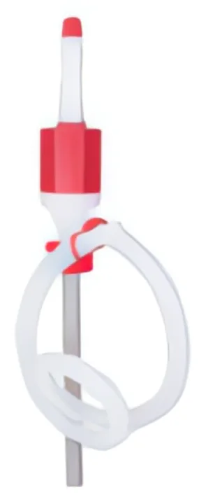

GROZ · Fuel & DEF Handling
Siphon Pumps
CAT NR SPH/3 · ORD NR 44402
| CAT NR (catalogue number) | SPH/3 |
|---|---|
| ORD NR (order number) | 44402 |
| Box quantity | 25 |
| Bung | 2" for use with drums |
| Discharge hose length (inch) | 47.70 |
| Discharge hose length (mm) | 1212 |
| Fits | 205 litre / 55 US gal. drums |
| Flow rate (GPM) | 7 |
| Flow rate (LPM) | 21 |
Ask for a quote The catalogue PDF, page 264
“Ask for a quote” opens this product in the catalogue: add it to your quote and send it. Buyers from Africa, the Gulf and worldwide are welcome; prices in USD, EUR or INR.
From the GROZ Fluid Handling CC-07 catalogue. Not yet verified: these details were read from the printed catalogue automatically; check the catalogue page before ordering.